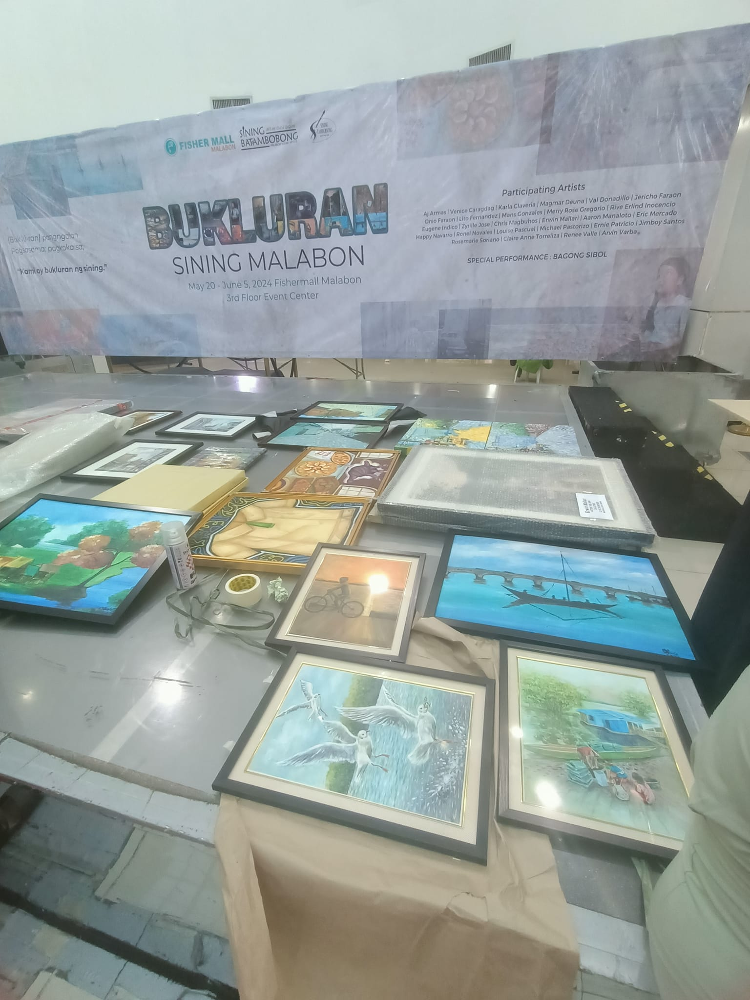
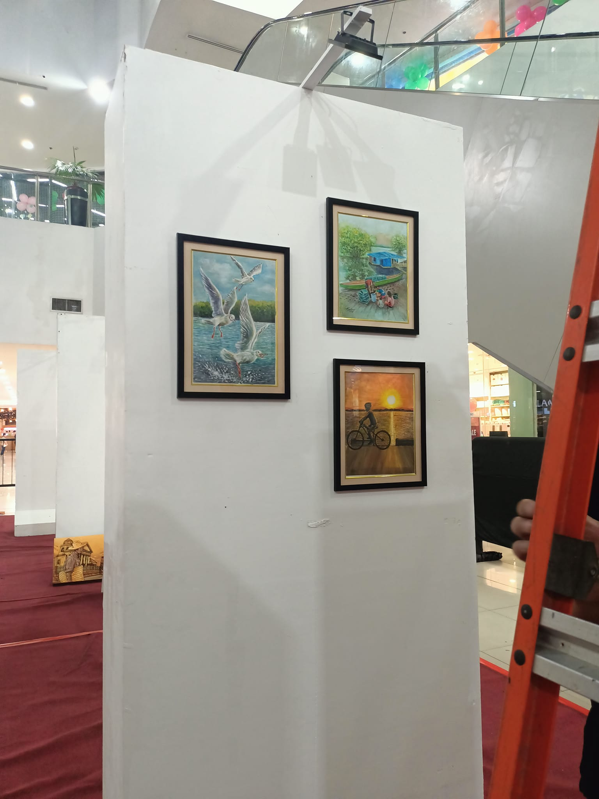

Bayanihan of Art: A Memorable Gallery Exhibit at Fishermall Malabon

Step inside a world where creativity, community, and Filipino talent shine! Our recent exhibit at Fishermall Malabon wasn’t just an art display—it was a celebration of local passion, teamwork, and on-the-spot magic.
A Gathering of Artists, A Gallery of Stories
There’s something magical about setting up a gallery with friends and fellow artists. Together, we transformed the event center into a vibrant space filled with portraits, landscapes, and unique masterpieces. Each wall told a new story.

We worked hand-in-hand, fixing frames, planning layouts, and making sure each artwork got its time to shine. It was real bayanihan—artists helping artists!
On-the-Spot Sketching: A Crowd Favorite
The exhibit wasn’t just for looking—it was interactive! Visitors lined up to have their portraits sketched live, bringing home a piece of the moment.
A Showcase of Local Masterpieces
From detailed charcoal portraits to vibrant paintings of everyday Filipino life, the gallery featured the best works of our co-artists.

Relive the Experience!
Couldn’t make it to the exhibit? Watch this short video and feel the creative buzz!